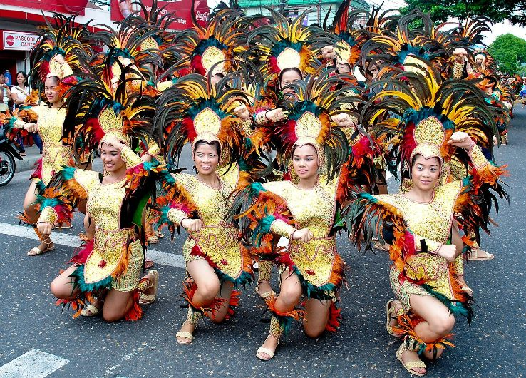
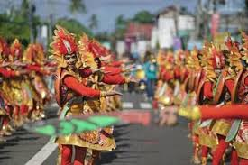
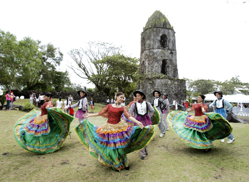
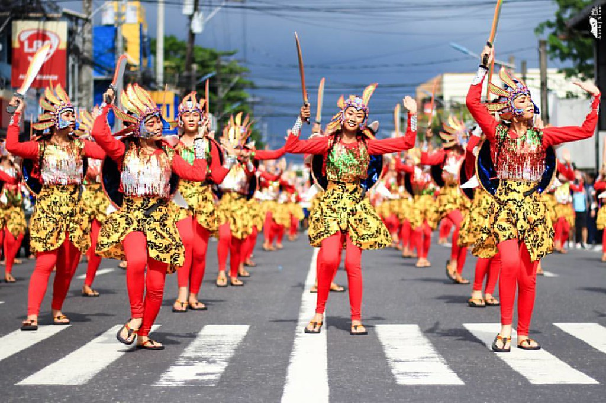
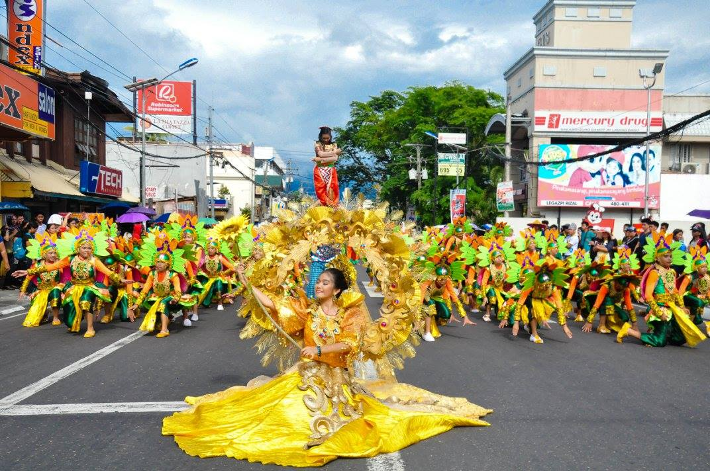
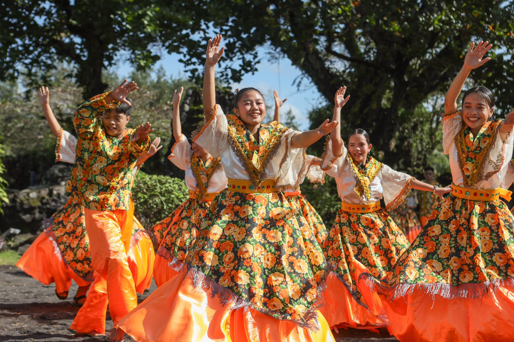

Celebrate the vibrant spirit, ancient traditions, and colorful festivals that define Albay's rich cultural identity.
The people of Albay are Bicolanos — known throughout the Philippines for their warmth, humor, resilience, and deep faith. Their culture is a beautiful blend of indigenous Bicolano traditions, centuries of Spanish Catholic influence, and a modern provincial identity anchored by one of nature's most dramatic landmarks: Mayon Volcano.

The Ibalong Festival is Albay's grandest annual celebration, held every August in Legazpi City. It draws inspiration from the ancient Bicolano epic poem "Ibalong" — a mythological narrative featuring legendary heroes like Baltog, Handyong, and Bantong who battled monsters and shaped the Bicol landscape. The festival features colorful street dancing, elaborately costumed performers, float parades, cultural shows, food fairs, and trade exhibits. It is one of the most visually spectacular festivals in the Bicol region and a must-see for visitors.

The Magayon Festival is celebrated throughout the entire month of May and is considered the province-wide tourism festival of Albay. "Magayon" means beautiful in Bicolano — a fitting name for a festival that celebrates the natural and cultural beauty of the province. The month-long event includes trade fairs, cultural presentations, sports competitions, concerts, food festivals, and the Miss Magayon pageant. Each municipality of Albay participates with their own local celebrations and pride.

Every municipality and barangay in Albay holds an annual fiesta in honor of its patron saint. These local celebrations are deeply rooted in Catholic tradition and are an important part of Bicolano community life. Visitors can experience authentic local festivities including processions, novenas, street dances, traditional games, and communal feasting. Daraga celebrates its Patron Saint feast with a particularly vibrant celebration involving the historic Daraga Church.

The Tabako Festival in Tabaco City celebrates the city's identity and economic strengths, particularly its knife-making and agricultural industries. The festival features cultural street dances, trade exhibits, food showcases, and local sports events. It is a proud celebration of Tabaco City's unique contributions to Albay's culture and economy, and a great opportunity for visitors to experience a more local, community-oriented festival.

Ligao City celebrates its charter anniversary and patron saint's feast with a citywide festival featuring cultural performances, agri-tourism showcases, local delicacies exhibits, and family-oriented activities. Ligao City, known for its peaceful rural environment and proximity to natural attractions, uses its fiesta to highlight eco-tourism and sustainable agricultural practices unique to the area.

Every February, the town of Daraga commemorates the victims of the 1814 Mayon Volcano eruption that destroyed the Cagsawa Church. The commemorative event includes mass offerings, cultural programs, heritage tours, and educational activities at the Cagsawa Ruins Park. It is a solemn yet meaningful event that honors the memory of the community lost to the volcano and acknowledges the resilience of the Bicolano people.
The Bikol language is spoken across the region, with various dialects in different municipalities. It is known for its musical rhythm and expressive vocabulary.
Beautiful Spanish-era churches in Daraga, Camalig, and throughout Albay stand as testament to centuries of Catholic faith and colonial architecture.
Abaca weaving, buri (palm leaf) products, pottery, and knife-making in Tabaco City are traditional crafts still practiced by local artisans.
The ancient Bicolano epic poem that narrates the mythological history of the Bicol Peninsula, featuring heroes like Baltog and Handyong who shaped the land.